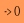

|
 |
| Descrizione |
|---|
| Sposta la posizione selezionata di un oggetto all'Origine. Questa macro sposta il Posizionamento di un oggetto in modo che la posizione selezionata diventi la sua nuova origine. Questo può essere utile quando oggetti importati da altri formati come STL o STEP si trovano in una posizione scomoda per l'ulteriore elaborazione da parte di FreeCAD. Versione macro: 00.02 Ultima modifica: 07-07-2021 Download: ToolBar Icon Autore: Edwilliams16 |
| Autore |
| Edwilliams16 |
| Download |
| ToolBar Icon |
| Link |
| Raccolta di macro Come installare le macro Personalizzare la toolbar |
| Versione macro |
| 00.02 |
| Data ultima modifica |
| 07-07-2021 |
| Versioni di FreeCAD |
| None |
| Scorciatoia |
| Nessuna |
| Vedere anche |
| Nessuno |
Questa macro sposta il Posizionamento di un oggetto in modo che la posizione selezionata diventi la sua nuova origine. Questa funzione può essere utile quando oggetti importati da altri formati come STL o STEP si trovano in posizioni scomode per l'ulteriore elaborazione da parte di FreeCAD.
Sono supportate le seguenti selezioni:
-- Vertice singolo -- spostato all'origine
-- Singolo segmento di linea -- punto medio spostato all'origine
-- Singoli cerchio singolo o arco di cerchio -- centro spostato all'origine
-- Single Face -- C.G. moved to origin
-- Single Object -- C.G. moved to origin (supports Solid, Shell, Compound and CompSolid)
-- Three Vertices -- Center of circle through the vertices moved to the origin (useful for tessellated circles)
Macro MoveToOrigin.FCMacro
__Title__ = "MoveToOrigin"
__Author__ = "edwilliams16"
__Version__ = "00.02"
__Date__ = "2021.7.7"
debug = False
'''Usage:
This macro will adjust the placement of a shape to place a selected feature at the origin.
One vertex: - to origin
One line segment - midpoint to origin
One circle - center to origin
One arc of circle - center to origin
One face - CG of face to origin
Three vertices - center of circle through vertices to origin
Shape - CG of shape to origin
If the shape is a BaseFeature inside a body, the base feature's placement in the body is adjusted.
'''
# Version 0.01 Original
# Version 0.02 - now handles objects in nested part containers
def circumcenter(A, B, C):
'''Return the circumcenter of three 3D vertices'''
a2 = (B - C).Length**2
b2 = (C - A).Length**2
c2 = (A - B).Length**2
if a2 * b2 * c2 == 0.0:
print('Three vertices must be distinct')
return
alpha = a2 * (b2 + c2 - a2)
beta = b2 * (c2 + a2 - b2)
gamma = c2 * (a2 + b2 - c2)
return (alpha*A + beta * B + gamma * C)/(alpha + beta + gamma)
def centerofmass(subshapes):
mass =0.0
moment = App.Vector(0, 0, 0)
for sh in subshapes:
mass += sh.Volume
moment += sh.Volume * sh.CenterOfMass
return moment/mass
def globalCG(obj, removeLocalOffset=True):
'''Find COM of object in global coordinates
remove local offset per https://forum.freecad.org/viewtopic.php?t=27821'''
gpl = obj.getGlobalPlacement()
pl = obj.Placement
rpl= gpl.multiply(pl.inverse())
if removeLocalOffset:
return rpl.multVec(obj.Shape.CenterOfMass)
else:
return gpl.multVec(obj.Shape.CenterOfMass)
def globalGCGHierarchy(obj):
''' Compute global COM of an object hierarchy'''
volume= 0
moment = App.Vector(0., 0., 0.)
def wrappedGCG(obj):
nonlocal volume, moment
if hasattr(obj, 'Shape'):
shape = obj.Shape
if hasattr(shape, 'CenterOfMass'):
print(f'{obj.Name} {vectorRound(globalCG(obj, True), nDec)}')
volume += shape.Volume
moment += globalCG(obj, True).multiply(shape.Volume)
else:
for obj1 in obj.OutList:
if hasattr(obj1, 'Shape'):
wrappedGCG(obj1)
wrappedGCG(obj)
return (volume, moment)
def vectorRound(v, n):
'''Round the output of App.Vector v to n dec places'''
return App.Vector(round(v.x, n), round(v.y, n), round(v.z, n))
isGlobal = False
nDec = 3
selt = Gui.Selection.getSelectionEx()
if len(selt) != 1:
print('Select one vertex, edge or object\nor three vertices for center of circle')
shift = App.Vector(0, 0, 0) # bail and do nothing
else:
sel = selt[0]
if sel.HasSubObjects:
vv = sel.SubObjects
if len(vv) ==3 and vv[0].ShapeType == 'Vertex' and vv[1].ShapeType == 'Vertex' and vv[2].ShapeType == 'Vertex':
shift = circumcenter(vv[0].Point, vv[1].Point, vv[2].Point)
if debug: print('Three Vertices')
elif len(vv) == 1:
selected = sel.SubObjects[0]
if selected.ShapeType == 'Vertex':
shift = selected.Point
if debug: print('One vertex')
elif selected.ShapeType == 'Edge':
if selected.Curve.TypeId == 'Part::GeomCircle': #circles and arcs
shift = selected.Curve.Center
if debug: print('One arc')
elif selected.Curve.TypeId == 'Part::GeomLine':
shift = (selected.valueAt(selected.FirstParameter) + selected.valueAt(selected.LastParameter))/2 # mid-point
if debug: print('One line')
else:
print(f'edge is {selected.Curve.TypeId} not handled')
shift = App.Vector(0, 0, 0) # bail and do nothing
elif selected.ShapeType == 'Face':
shift = selected.CenterOfMass #center of face
if debug: print('One face')
else:
print(f'ShapeType {selected.ShapeType} not handled')
shift = App.Vector(0, 0, 0) # bail and do nothing
else:
print('Wrong number of Selections')
shift = App.Vector(0, 0, 0) # bail and do nothing
else:
if debug: print(f'ObjectName is {sel.ObjectName}')
#if sel.ObjectName[0:11] == 'BaseFeature':
if hasattr(sel.Object, 'Shape'):
if debug: print('One solid')
shape = sel.Object.Shape
if shape.ShapeType == 'Solid' or shape.ShapeType == 'Shell':
shift = shape.CenterOfMass
elif shape.ShapeType == 'Compound' or shape.ShapeType == 'CompSolid':
#shift = centerofmass(shape.SubShapes)
vol, mom = globalGCGHierarchy(sel.Object)
shift = mom.multiply(1./vol) # global!
isGlobal = True
#more cases?
else:
print(f'Object ShapeType {sel.Object.Shape.ShapeType} not handled')
shift = App.Vector(0, 0, 0) # bail and do nothing
else:
print(f'{sel.ObjectName} is not a shape')
shift = App.Vector(0, 0, 0) # bail and do nothing
pl = App.ActiveDocument.getObject(sel.ObjectName).Placement
gpl = App.ActiveDocument.getObject(sel.ObjectName).getGlobalPlacement()
gplr = gpl.multiply(pl.inverse())
if isGlobal:
shift = gplr.inverse().multVec(shift) # global shift in LCS
print(f'Shift = {vectorRound(shift,nDec)}')
locorigin = gplr.inverse().multVec(App.Vector(0., 0., 0.)) #global origin in LCS
App.ActiveDocument.openTransaction('Undo Move to Origin')
App.ActiveDocument.getObject(sel.ObjectName).Placement.move(locorigin-shift)
App.ActiveDocument.commitTransaction()
App.ActiveDocument.recompute()
The discussion forum MoveToOrigin Macro
{kind=link}
{kind=link}